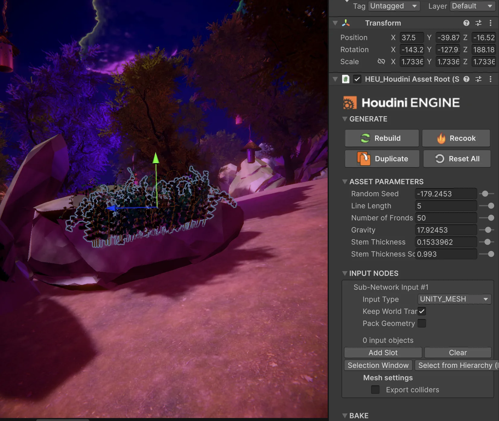
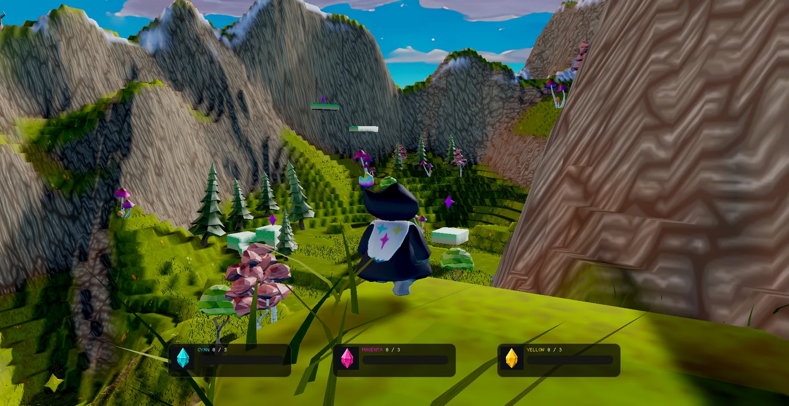
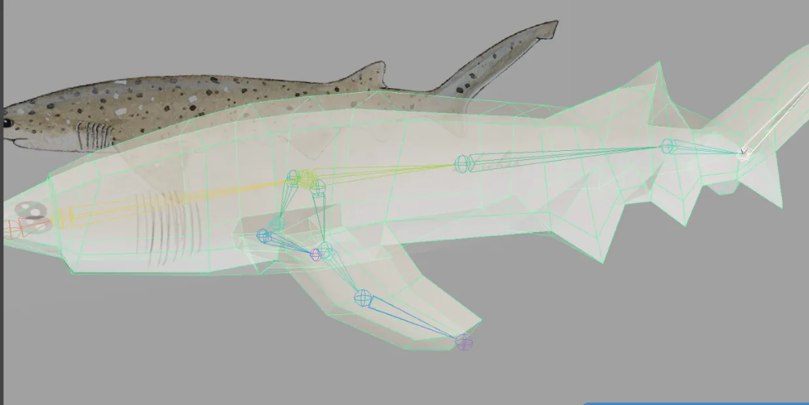
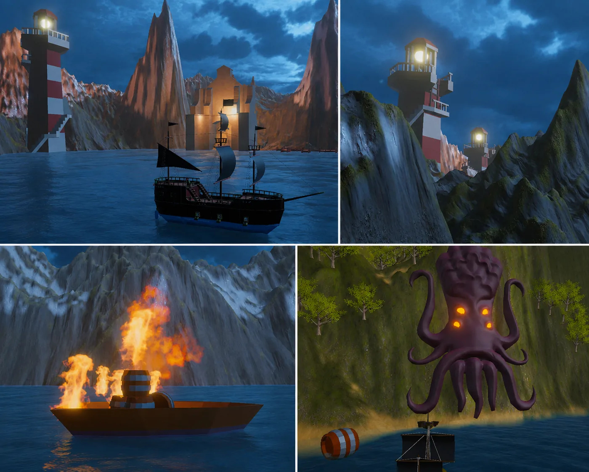
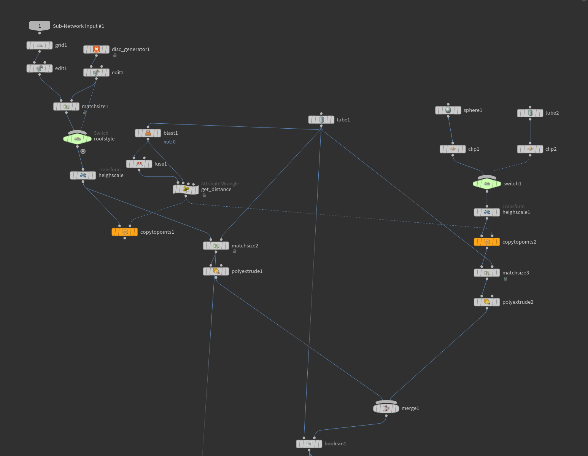
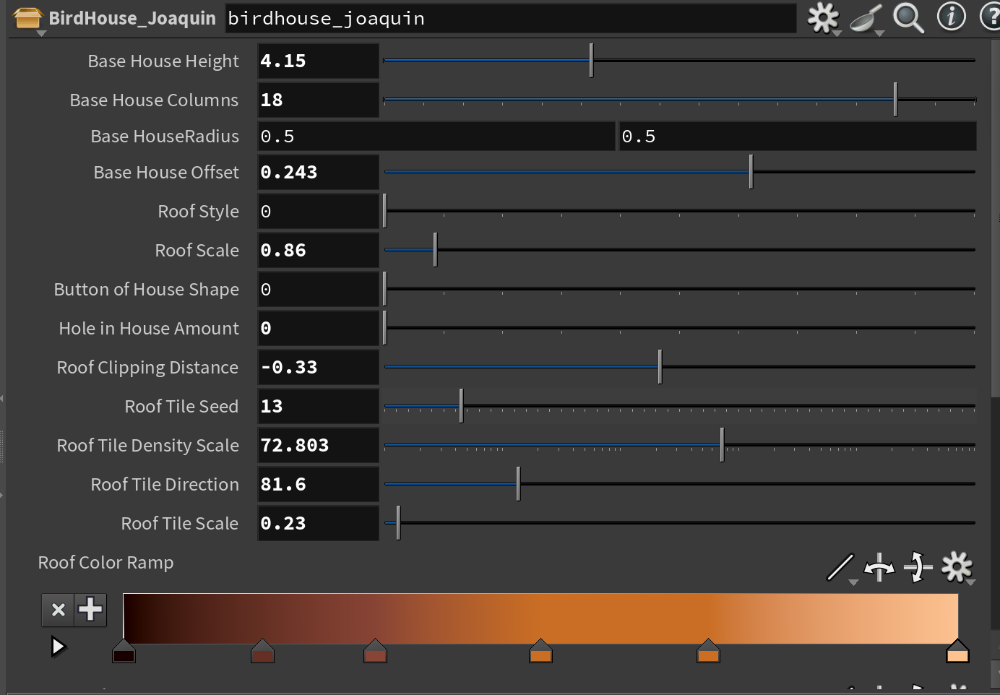

Procedural Workflows
Houdini Digital Assets for rocks, trees, and ivy, with controls exposed for in-engine iteration through Houdini Engine.
Technical Art
Engineering the path from artistic intent to a real-time result.
My strongest work sits where procedural tools, 3D asset pipelines, rendering, VFX, and engine integration meet. I like understanding the artistic goal, then building the technical path that makes it practical to create, iterate, and run in real time.
What I Work Across
Houdini Digital Assets for rocks, trees, and ivy, with controls exposed for in-engine iteration through Houdini Engine.
Terrain reconstruction, splatmap blending, GLSL shaders, GPU instancing, animated grass, lighting, and material workflows.
Maya modeling, rigging, weight painting, animation, Unity Animator integration, VFX, audio, and gameplay-side behavior.
Terrain composition, masks, textures, lighting, post-processing, visual readability, and content-aware performance decisions.
Reusable parameters, readable node networks, predictable engine integration, and documentation that another developer or artist can follow.
I am comfortable tracing a visual problem through the asset, animation, engine, shader, gameplay state, or content setup instead of treating them as separate worlds.
Selected Technical Art Work

A Meta Quest 3 spellcasting puzzle experience where my work crossed Houdini procedural tools, spell VFX, lighting, world building, interactive systems, and Unity integration.
The team needed environmental variation and readable magical feedback without authoring every asset and interaction as a one-off.
I built reusable rock, tree, and ivy HDAs and contributed spell VFX, lighting, environmental reactions, and visual feedback.
Houdini, Houdini Engine, Unity, C#, VFX Graph, Shader Graph, Meta XR, lighting, post-processing.

A five-person real-time graphics project that connected environment authoring with a custom C++/OpenGL renderer.
The world needed large, readable biomes and dense vegetation, but the final runtime could not rely on Unity's renderer.
I authored terrain, exported height/splat data, built the terrain rendering workflow, and implemented instanced grass.
Unity Terrain, heightmaps, splatmaps, Photoshop masks, C++, OpenGL, GLSL, GPU instancing, wind animation.

An educational VR project where I created predator assets and carried them through the pipeline into runtime behavior.
Shark + barracuda assets.
IK, deformers, weighting.
Swimming and predator motion.
Animator, C#, events, audio.

I combined terrain/world construction, lighting/post, encounter readability, chunk activation, enemy lifecycle control, VFX, and animation systems across two playable levels.
Terrain layout, lighting, post-processing, VFX, SFX integration, animation controllers.
Distance-based chunk management, spawning, lifecycle control, and scene-cost reduction.
Level navigation and encounter pacing were revised from playtesting feedback.
Technical Documentation
For Path of Anu, I also documented how the Houdini tools were built, exposed to artists, and integrated into Unity. The goal was to make the workflow understandable enough for someone else to pick up, modify, and iterate on without needing me beside them.


A breakdown of the procedural tools I developed for Path of Anu, including graph organization, exposed HDA controls, Houdini Engine integration, and the workflow used to iterate on procedural assets directly inside Unity.
Graph Structure
Artist Controls
Unity Integration
Iteration Workflow